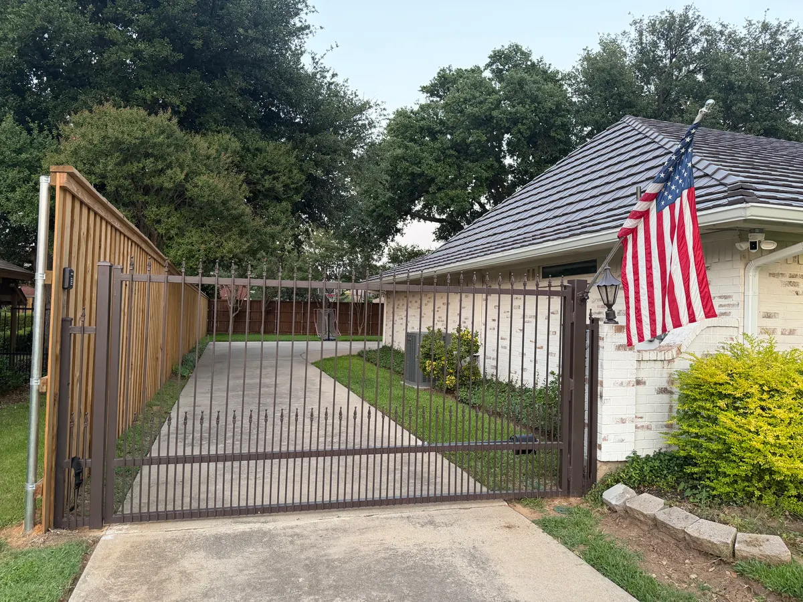
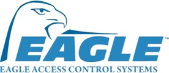
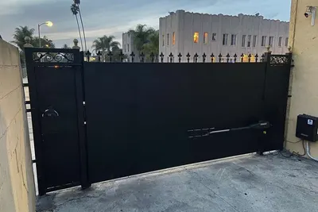
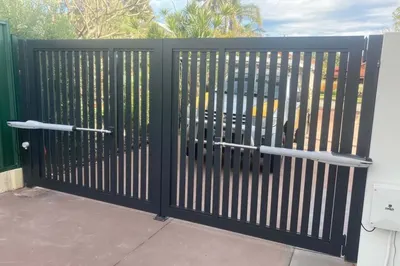
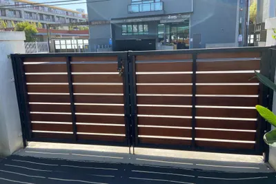
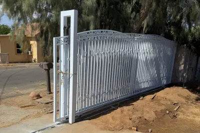
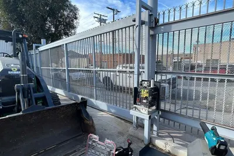
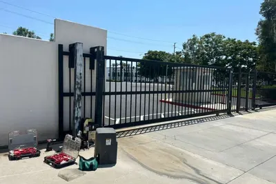
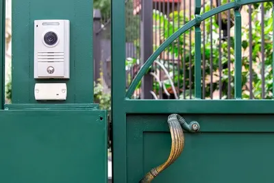

Technicians available now — 16+ years across DFW
Need your gate repaired today? Call and speak to a technician — we are open 24/7.
Residential, commercial, HOA and industrial. Our technicians carry parts for LiftMaster, DoorKing, FAAC, Elite, Viking and Ramset — on the truck, not on order.
Brands we service — parts carried on the truck

Sound familiar?
These are the calls we take every day across the Metroplex. Most of them are a repair, not a replacement.
Tell us what the gate is doing and our technician will diagnose it on site, explain what failed, and repair it — most jobs are finished on the first visit.
Call Shield Gate RepairWhat we do
Eight service lines, all of them repair-first. We fix what can be fixed before we ever quote a replacement.
Operators that hum, stall, run hot or stop mid-travel. Rebuilt or replaced depending on what the diagnosis shows.
A gate stuck open is a security problem and a gate stuck closed traps vehicles. We answer 24/7.
Swing and slide gates: travel limits, sensors, control boards, chains, racks and rollers.
Power supply, transformers, wiring runs and control faults — traced properly rather than swapped hopefully.
Cracked welds, sagging frames, hinge failure and post movement — the DFW clay causes most of it.
Multi-family and business entrances, including gates the whole community depends on getting through.
Keypads, intercoms, telephone entry, loop detectors, card readers and remote programming.
New gates and operators when a repair genuinely is not the right answer — and we will tell you when it is not.
Every kind of gate
Swing, slide, cantilever, iron, barrier arms and the access control that drives them.







Why customers choose us
Gates fail at inconvenient hours. Someone answers the phone at 11pm on a Sunday.
Not a franchise routing your call elsewhere. A DFW company that has been doing this since 2010.
LiftMaster, DoorKing, FAAC, Elite, Viking, Ramset, All-O-Matic and more — carried, not ordered.
Most gates that get quoted for replacement do not need one. We diagnose first and say so plainly.
Access-control work touches your property security. It should be done by an insured company.
Driveway gates, HOA entrances, business yards and industrial sliders — same team, same standard.
Three steps
Tell us what the gate is doing. Most problems are recognisable from the description alone.
Our technician finds the actual cause — not the first symptom — and explains it before any work starts.
With the right part from the truck wherever possible, so the job finishes on the first visit.
Real customers, on camera
Not written testimonials — actual customers filmed on the job, on our own channel.
Where we work
We cover 190 cities across the Metroplex and the surrounding areas, including:
Not listed? Call and we will tell you straight away whether we cover your address.
Questions
Get it fixed
Call and speak to a technician now, or send the form and we will get back to you. Either way you are talking to the people who will do the work.
Four fields. We will call you back.
We will call you back shortly. If your gate is stuck right now, calling is faster: (214) 735-4314.